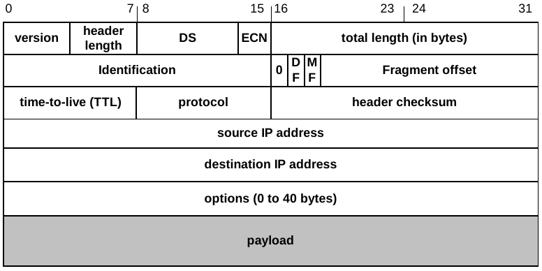
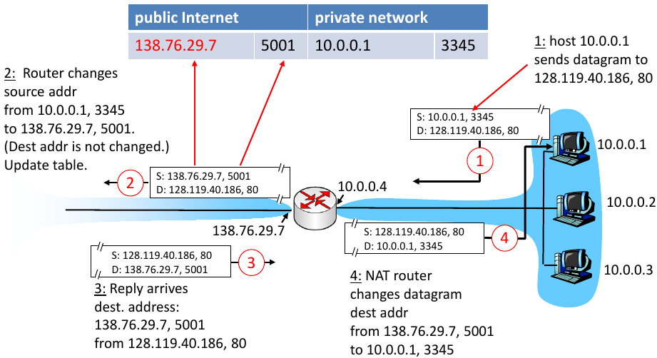

IPv4 ist das zentrale Protokoll der Netzwerkschicht. Alle Protokolle der darüberliegenden Schichten und auch der Netzwerkschicht nutzen IPv4 (z.B. verschickt auch ICMP IP Pakete).
Adressierungstymen:

Figure 1: IP-Header
Header Felder:
MAC-Adressen sind nicht sinnvoll hierarchisch aufgeteilt. Sie werden nach Hersteller vergeben, nicht nach Lokalisation des Systems. Daher würde Routing über MAC-Adressen zu großen Routing-Tables führen, da die Route zu jedem einzelnen System gegacht werden müsste.
Beim Übergang von Paketen zwischen privaten und öffentlichen Netzwerken ist network address translation (NAT) erforderlich. NAT bezeichnet:
NAT kommt typischerweise in Routern zum Einsatz.

Figure 2: NAT: Router ersetzen private Adressen im Header der IP-Pakete
NAT verstößt gegen das End-zu-End Prinzip, da von außen keine Verbindung mit einem System in einem privaten Netzwerk (LAN) hinter einem Router aufgebaut werden kann. Das kann mit port-forwarding erreicht werden.
loopback-Adresse (127.0.0.1): Paket, die an diese Adresse versendet werden verbleiben auf dem System.
Vorteile:
variabler Netzwerk prefix, der in Suffixschreibweise angegeben wird, z.B. 134.245.0.0/16
Vorteile:
ARP: IP -> MAC
RARP: MAC -> IP